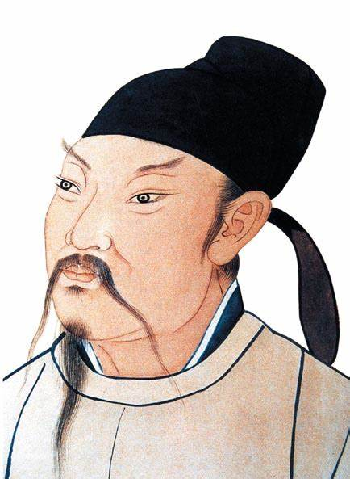
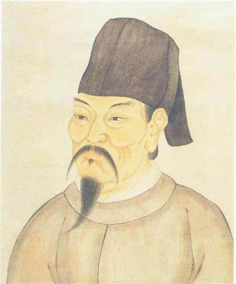

特点：气势磅礴，意境开阔。
代表诗人有李白、岑参等。
例如李白的《将进酒》：君不见黄河之水天上来，奔流到海不复回。诗人以豪迈奔放的笔触，描绘出黄河奔腾而下的壮丽景象，抒发了人生短暂、应及时行乐的豁达情怀，同时也展现出其对自身才华的高度自信。
特点：情感细腻，语言优美。
代表诗人有李商隐、温庭筠等。
例如李商隐的《锦瑟》：锦瑟无端五十弦，一弦一柱思华年。诗中通过对锦瑟的描绘，引发了对往昔美好时光的追忆和对人生无常的感慨，意境朦胧，情感深沉。
特点：清新淡雅，质朴自然。
代表诗人有王维、孟浩然等。
例如王维的《山居秋暝》：空山新雨后，天气晚来秋。明月松间照，清泉石上流。诗人描绘了秋日山居的清幽景色，营造出一种空灵、宁静的意境，体现了诗人对自然的热爱和对归隐生活的向往。
